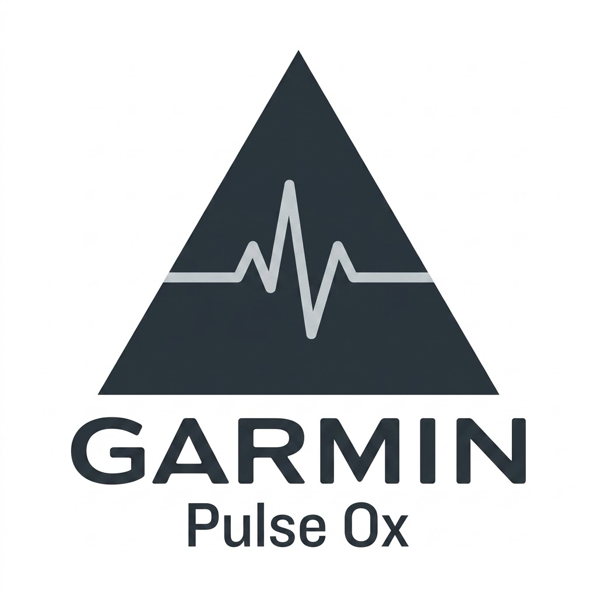

Respiratory & Oxygen Monitoring
Track your blood oxygen levels and respiratory rate to ensure peak health, optimize recovery, and monitor sleep quality.
Back to Health ToolsMasimo MightySat
Hospital-grade pulse oximeter that provides accurate measurements of SpO2, pulse rate, and hydration index.
Wellue O2Ring
Continuous overnight tracking with a comfortable wearable ring that alerts you to low oxygen levels.
iHealth Air
A smart, wireless pulse oximeter that easily syncs with your smartphone to build a comprehensive health history.
Spire Stone
Wearable device that monitors your breathing patterns to detect stress and tension throughout the day.

Garmin Pulse Ox
Integrated smartwatch feature providing on-the-go blood oxygen estimation for altitude acclimation and sleep.